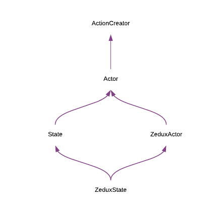

ZeduxState
The State created by the built-in state() factory.
A ZeduxState is a normal State with a few extra methods for easily declaring enter and leave hooks.
A ZeduxState is also a valid ZeduxActor, complete with payload() method for overriding the default identity function payload creator.
Definition
interface ZeduxState<T extends string> extends State<T>, ZeduxActor<T> {
onEnter(processor: Processor): ZeduxState<T>
onLeave(processor: Processor): ZeduxState<T>
}
onEnter - A function that accepts a valid processor and sets it as this State's enter property.
onLeave - A function that accepts a valid processor and sets it as this State's leave property.
Examples
The classic traffic light example:
import { createStore, state, transition } from 'zedux'
const green = state('green')
.onEnter(dispatch => {
setTimeout(
() => dispatch(yellow()),
2000
)
})
const yellow = state('yellow')
.onEnter(dispatch => {
setTimeout(
() => dispatch(red()),
500
)
})
const red = state('red')
.onEnter(dispatch => {
setTimeout(
() => dispatch(green()),
2000
)
})
const trafficLight = transition(green)
.to(yellow)
.to(red)
.to(green)
const store = createStore()
.use(trafficLight)
store.subscribe((newState, oldState) => {
console.log(`light went from ${oldState} to ${newState}`)
})
Method API
zeduxState.onEnter()
Sets the enter property of the ZeduxState.
Definition
(processor: Processor) => ZeduxState
processor - A valid processor that will be called when the machine enters this state.
Returns the ZeduxState for chaining.
Examples
The following two examples are essentially equivalent:
const isFetching = () => ({ type: 'isFetching' })
isFetching.type = 'isFetching'
isFetching.enter = () => console.log(`entered ${isFetching.type} state`)
import { state } from 'zedux'
const isFetching = state('isFetching')
.onEnter(() => console.log(`entered ${isFetching.type} state`))
zeduxState.onLeave()
Sets the leave property of the ZeduxState.
Definition
(processor: Processor) => ZeduxState
processor - A valid processor that will be called when the machine leaves this state.
Returns the ZeduxState for chaining.
Examples
The following two examples are essentially equivalent:
const isFetching = () => ({ type: 'isFetching' })
isFetching.type = 'isFetching'
isFetching.leave = () => console.log(`left ${isFetching.type} state`)
import { state } from 'zedux'
const isFetching = state('isFetching')
.onLeave(() => console.log(`left ${isFetching.type} state`))
Notes
ZeduxStates are a conglomeration of many different concepts of Zedux. As such, it can be difficult to remember everything they do. Just remember these 4 pieces that make up a ZeduxState:
A ZeduxState is an actor. It has a
typeproperty denoting its action type. It also is an action creator function – when called, it returns an action whosetypeis the State'stypeproperty.A ZeduxState is a ZeduxActor. It thus has a
payload()method for overriding the default payload creator function. Thispayload()method returns the ZeduxActor for chaining.A ZeduxState is a State. It can have optional
enterandleaveproperties that should be called when the machine enters and leaves this State, respectively.A ZeduxState has two additional, unique methods:
onEnter()andonLeave(). These are just convenience methods for setting theenterandleaveproperties, respectively. They both return the ZeduxState for chaining.
Note that both
StateandZeduxActorextend theActorinterface.ZeduxStateextends bothStateandZeduxActor, creating a cute little diamond, if we were to diagram this inheritance hierarchy.
